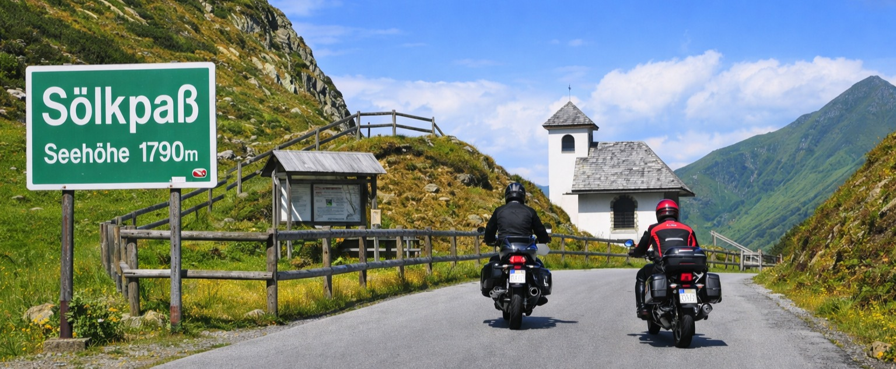
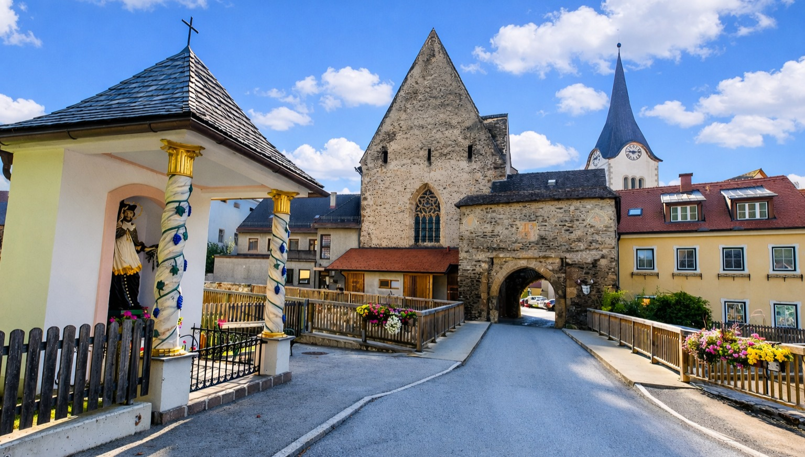
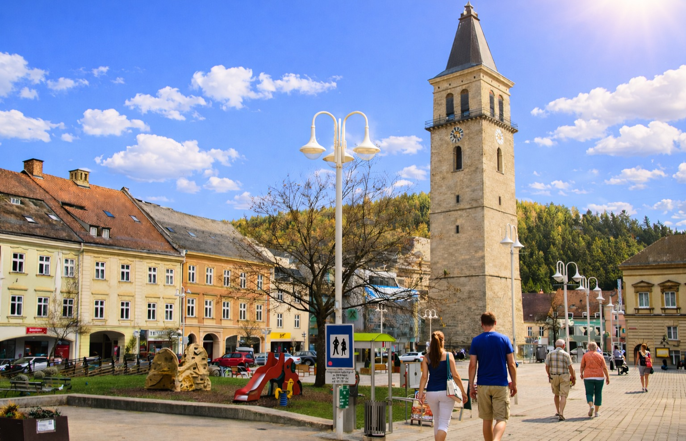
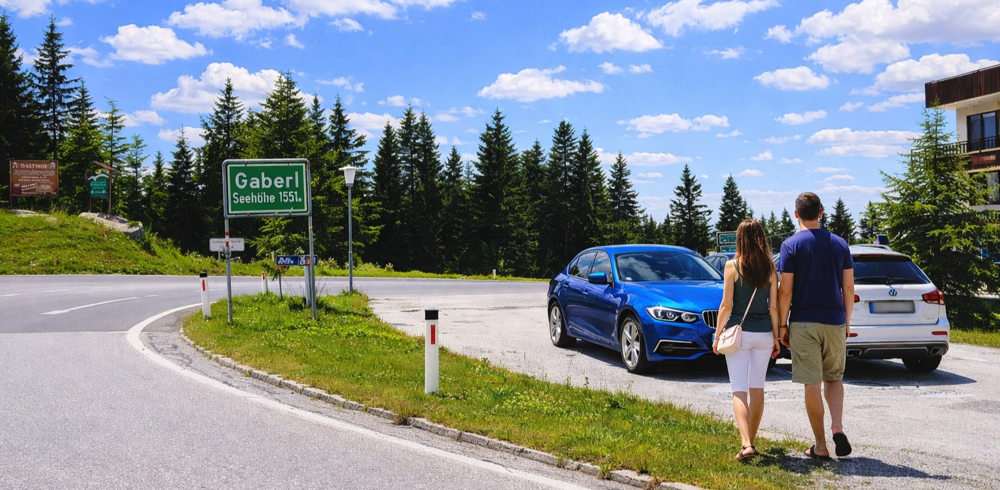
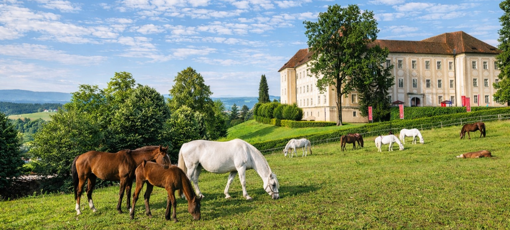

DAY04 – Hallstatt → Velence
A mérés automatikusan indul oldalnyitáskor, majd 5 mp múlva frissít.
A távolságok minden célpontnál frissülnek, és az oldal a legvalószínűbb következő pontra ugrik.
1. Koppen-hágó (Koppenpass)
47.5627, 13.714947
mérés:
várakozás
távolság: —
690 méter magas hágó a Hallstatti-tó és Bad Aussee között, a Traun szurdokvölgyében vezet.

2. Sölk-hágó (Sölkpass)
47.265481, 14.075412
mérés:
várakozás
távolság: —
1788 méter magas, érintetlen karakterű hágó az Alacsony-Tauernben, vadregényes alpesi környezetben.

3. Oberwölz (A legkisebb osztrák város)
47.202345, 14.281023
mérés:
várakozás
távolság: —
Stájerország legkisebb városa, középkori városfallal és városkapukkal, az útvonal közvetlen közelében.

4. Judenburg
47.168902, 14.660724
mérés:
várakozás
távolság: —
A Mura-völgy történelmi kereskedelmi központja, jelképe a 75 méter magas Stadtturm.

5. Gaberl-hágó
47.108456, 14.916847
mérés:
várakozás
távolság: —
1547 méter magas hágó a Stubalpe vonulatában, széles, jól belátható kanyarokkal.

6. Lipizzanerheimat (Köflach, Piber)
47.069412, 15.054321
mérés:
várakozás
távolság: —
A lipicai tenyésztés osztrák központja Piber térségében, Köflach mellett halad el az útvonal.

Térkép